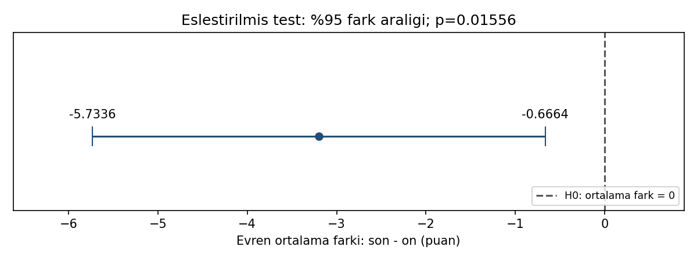

14 / GENEL SINAVA HAZIRLIK
Yöntemi seç, bulguyu gerekçelendir.
24 çift · son − ön farkı = −3,2 · farkların s değeri = 6
Sorudan yönteme
Aynı kişilerin önce ve sonra ölçülen değerleri değişmiş mi? Negatif bir farkı nasıl yorumlarız?
Son−ön farkları için tek örneklem t hesabı: t = −3,2/(6/√24). Eşleştirme korunur; sıfır fark hem test hem güven aralığında değerlendirilir.
Gör, karşılaştır, yorumla

t(23) = −2,612789; p = 0,015558. %95 fark aralığı [−5,7336; −0,6664], d_z = −0,533333. Ortalama son ölçüm, ön ölçümden 3,2 birim düşüktür.
Azalmanın iyi veya kötü olması ölçülen değişkene bağlıdır. Kontrol grubu ve uygun tasarım olmadan değişimi müdahalenin nedensel etkisi olarak yorumlamayın. Özetler varsayımları tek başına sınamaz.
17 referans değerinin tamamı
Gösterim yuvarlatılmıştır; kodlar tam duyarlıklı CSV’yi kullanır.
| Grup | Ölçü | Değer |
|---|---|---|
| girdi | cift_sayisi | 24 |
| girdi | ortalama_fark | -3.2 |
| girdi | fark_sapmasi | 6 |
| girdi | alfa | 0.05 |
| test | standart_hata | 1.224744871 |
| test | serbestlik | 23 |
| test | t | -2.612789059 |
| test | p_cift | 0.01555763123 |
| test | dz | -0.5333333333 |
| test | kritik_t | 2.06865761 |
| test | hata_payi | 2.533577799 |
| test | alt_sinir | -5.733577799 |
| test | ust_sinir | -0.666422201 |
| test | genislik | 5.067155598 |
| test | reddet | 1 |
| test | sifir_aralikta | 0 |
| test | guven_duzeyi | 0.95 |
Aynı veri, üç yazılım
ZIP’i tamamen ayıklayın. Çalışma klasörü b14/ornek-01 olmalıdır. Kodlar bilgisayarınızda çalışır.
Python
py cozum.py --check --grafikNumPy, pandas, SciPy ve Matplotlib gerekir. Beklenen: 17 kontrol değeri eşleşiyor.
R / RStudio
Rscript --vanilla cozum.R --check --grafikStandart R yeterlidir. RStudio konsolunda source("cozum.R") yalnız hesapları gösterir; otomatik kontrol için:
kontrol_et(sonuc, read.csv("beklenen-sonuclar.csv", stringsAsFactors=FALSE))IBM SPSS 29 · kullanıcı sayısal kontrolü geçti
SPSS 29 adım adım kontrol rehberi
CD 'C:/.../b14/ornek-01'.
INSERT FILE='spss-dogrula.sps' ERROR=STOP.Sonra aynı klasörde terminalden:
py spss_karsilastir.py --surum 29 --rapor spss-sonuc.jsonSPSS dışa aktarımı olmadan bu kontrol geçmez. SPV çıktısını ve JSON raporunu birlikte saklayın.
Önce tahmin et, sonra açıkla
Farkı ön−son olarak tanımlasaydık t, p ve güven aralığı nasıl değişirdi?
Gerekçeli yanıtı göster
t ve d_z işaret değiştirir; çift yönlü p aynı kalır. Aralık [0,6664; 5,7336] olur. Araştırma yorumu seçilen fark yönüyle tutarlı yazılmalıdır.
Doğrulama durumu
| Ortam | Durum |
|---|---|
| Python | 17 referans değeri; grafik üretimi ve hatalı girdi kontrolleri geçti. |
| R 4.3.3 | 17 referans değeri ve Python–R sonuç karşılaştırması geçti. |
| IBM SPSS | 17/17 kontrol kullanıcı ortamında geçti; başarılı konsol sonucu paylaşıldı. Ham JSON/CSV ve tam SPV günlüğü ayrıca incelenmedi. |
17 Eylül 2026. Sayısal uyum, araştırma varsayımlarının sağlandığını kanıtlamaz.